本文章最後由 gigi-21 於 2009/12/12 02:39 PM 編輯 我們需要的文具
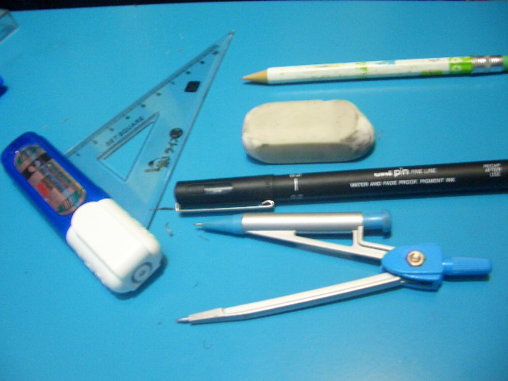
附件: CIMG0172.JPG
利用圓規畫頭
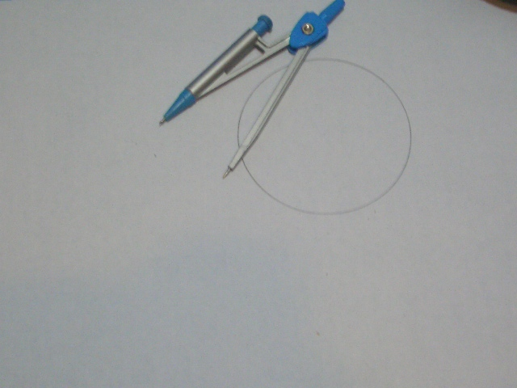
附件: CIMG0155.JPG
加上蝴蝶結
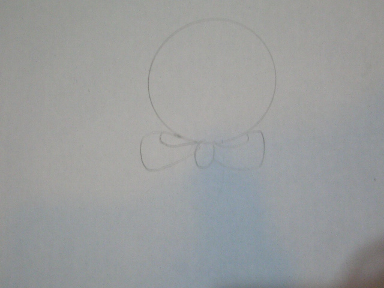
附件: CIMG0156.JPG
加上腰
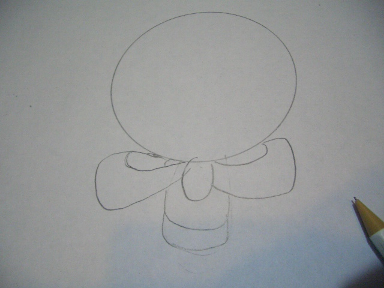
附件: CIMG0157.JPG
手.裙子
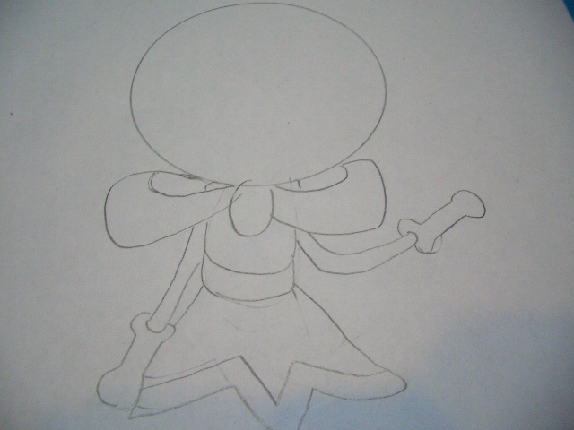
附件: CIMG0158.JPG
腳
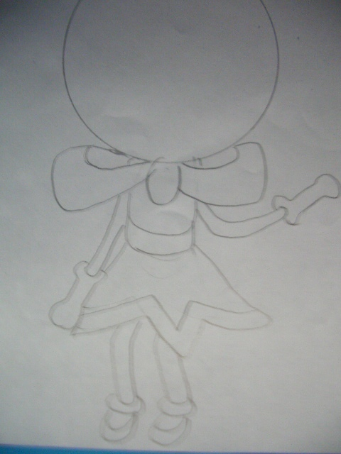
附件: CIMG0159.JPG
頭髪
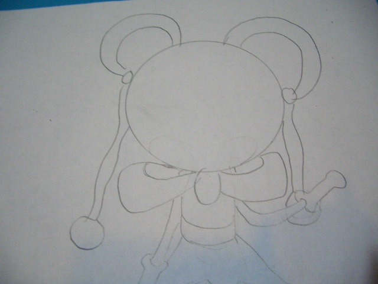
附件: CIMG0160.JPG
ロ的外框
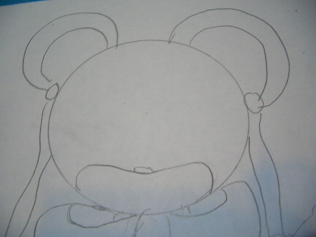
附件: CIMG0161.JPG
眼
附件: CIMG0162.JPG
ロ
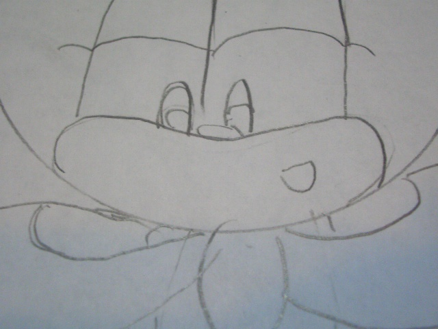
附件: CIMG0163.JPG
頭飾.耳
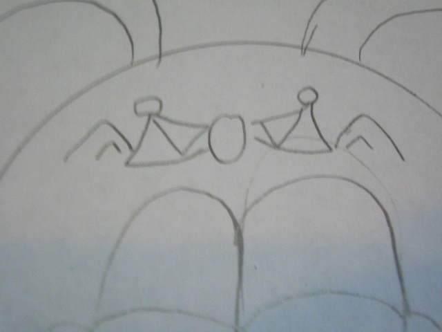
附件: CIMG0164.JPG
背景(蛋糕)
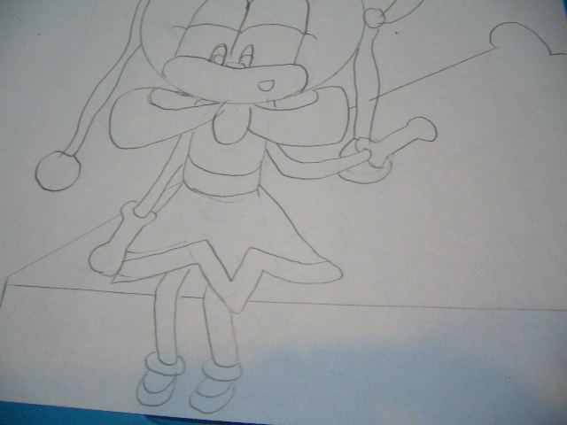
附件: CIMG0167.JPG
草莓
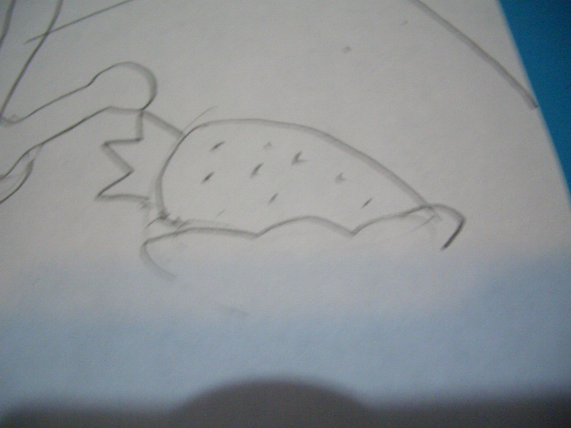
附件: CIMG0168.JPG
蛋糕邊
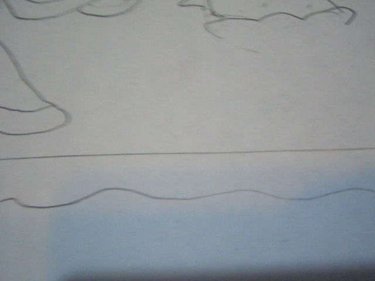
附件: CIMG0169.JPG
翼
附件: CIMG0170.JPG
絲帶
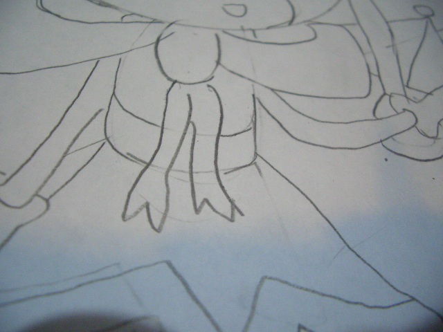
附件: CIMG0171.JPG
用針筆加深顔色
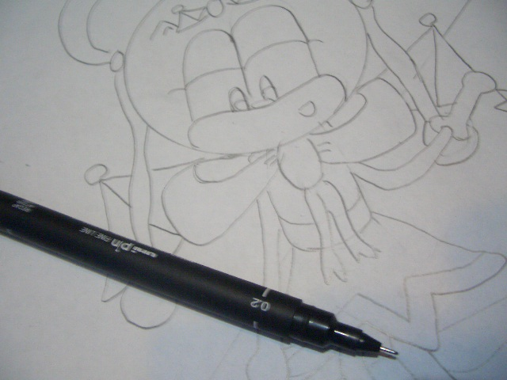
附件: CIMG0173.JPG
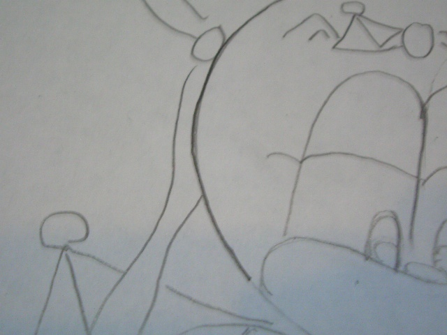
附件: CIMG0174.JPG
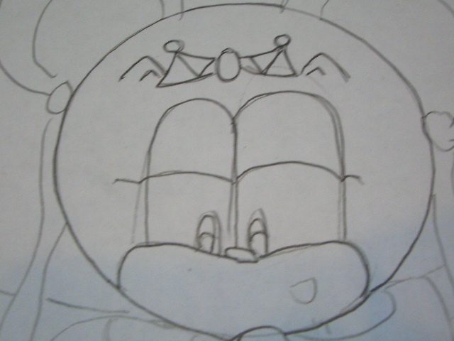
附件: CIMG0175.JPG
擦掉鉛筆
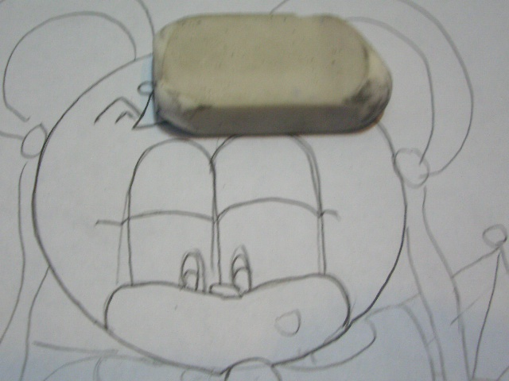
附件: CIMG0176.JPG
--------------------------------
喔喔還不錯!!!
不過人物骨架多多練習會更好!!!
可以畫更多的動作
不錯唷!!
可以善用工具來做圖也是很重要的
下次你也可以採用影片的方式來分享你的畫畫經過
希望妳的技術能更上次層樓!!
加油[:smile42:]
顔色筆
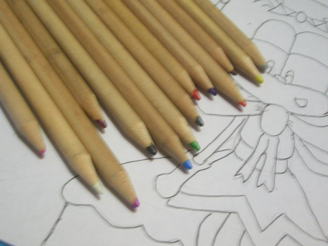
附件: CIMG0179.JPG
--------------------------------
完成!!
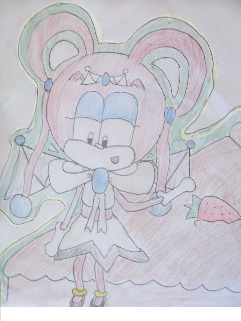
附件: CIMG0182.jpg
3# gmasomee3 用影片嘛...我也想過.因為某種原因所以不用了[:baozi18:]
色鉛筆啊～～
真是令人懷念的著色方式……
不過很浪費就是了……
很快就用完的工具，所以我也沒用，改用水彩色鉛筆。
長得很像，但是用法不一樣。
用細的水彩筆就可以沾水畫的工具，感覺還不錯，可以考慮看看。
不過，我個人還是覺得用電腦畫更省唷！
家裡只要有掃描器，就可以把線條掃描進電腦。
當然相機也是可以啦，可是拍的技術要好，而且也要會處理相片。
如果可以的話，我建議可以想辦法取得Photoshop或是Coldraw之類的軟體，如果沒有數位板的話，用滑鼠畫，這兩種軟體工具也蠻齊全的。
Painter的話是屬於上乘數位筆玩家在用的軟體。
其實厲害的人，就連小畫家都可以畫得很好……(比較浪費時間啦……)
既然家裡有電腦，不妨嘗試看看用電腦畫圖囉。
6# knight2002y Photoshop,我有用喔,看不出? 掃描器.我有,但不會用[:baozi25:]
看別人畫圖的過程蠻有趣的 ＝w＝
從一開始的基本圓形到最後的上色完成品真的差很多，這樣看下來就更有驚訝感～
總覺得妳的作品有比之前來的純熟，繼續加油囉～！